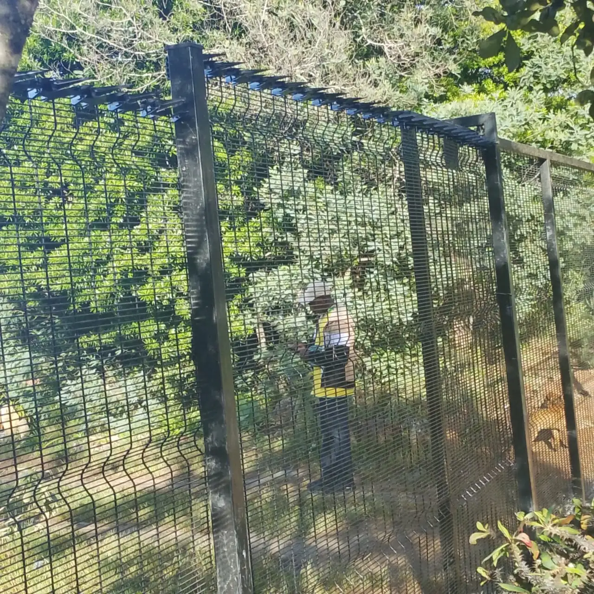
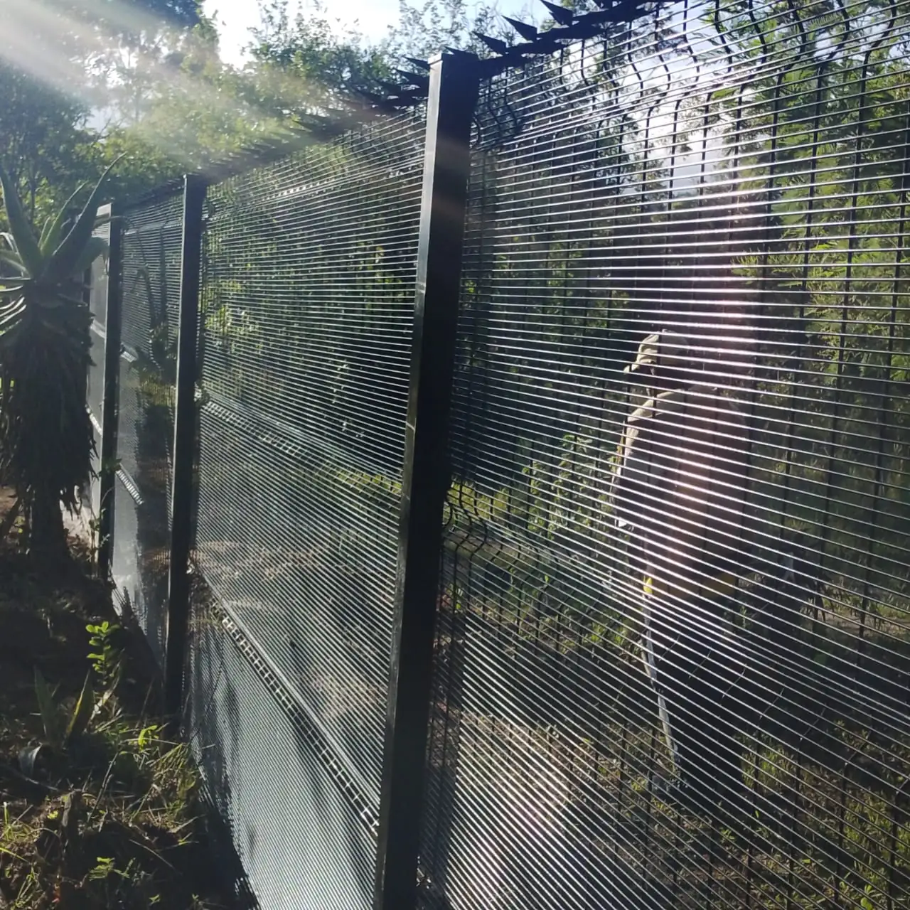

Real Azzar Installations
ClearVue Security in Place
Rigid welded panels installed with anti-climb apertures, formed bends and optional electric or spike security topping.



High-Security Anti-Climb Welded Mesh

Anti-climb welded mesh fencing for schools, commercial properties, solar farms and secure perimeters in Zimbabwe.
Rigid welded panels installed with anti-climb apertures, formed bends and optional electric or spike security topping.

Secure homes, gardens, and estates with professional fencing tailored to your boundary requirements.
Protect business premises, warehouses, and commercial land with durable perimeter solutions.
Heavy-duty perimeter protection for factories, depots, and industrial operations.
Define and secure farm boundaries, livestock areas, and rural properties.
Safe and visible perimeter fencing for schools, clinics, and government facilities.
High-security perimeter solutions for mining operations and solar installations.
We used Azzar to secure our school perimeter with clearview fencing. The result looks fantastic — our parents and staff feel so much safer. Highly recommended.
Clearview (ClearVue) fencing is made from rigid welded mesh panels with small apertures that are hard to grip or climb. Because you can see through the panels, guards, CCTV cameras and neighbours keep a clear view of the perimeter, while the boundary still looks neat and modern.
Azzar supplies and installs ClearVue for homes, schools, commercial premises, warehouses, solar installations and other secure sites in Harare and across Zimbabwe. Panels can be finished with formed bends, spike topping or electric fence strands where a higher level of security is needed.
Small mesh apertures leave little room for fingers or toes, which makes the fence difficult to climb.
Security staff and cameras can see through the fence, so nothing is hidden behind a solid wall.
Welded panels stay straight and tidy, giving a clean, professional boundary.
Galvanised materials help resist rust in Zimbabwe’s rain and sun.
Combine with spike topping, razor wire or electric strands for higher-risk perimeters.
Pedestrian and vehicle gates can be fabricated and fitted to match the fence line.
Every site is different, so we match the panel layout, posts, toppings and gates to your boundary instead of quoting from a generic price list.
We visit or review photos of your boundary and agree what needs protecting.
We recommend the panel layout, posts, toppings and gates for the site.
Our team sets posts and fixes panels in a straight, secure line.
We check the finished fence and gates with you before handover.